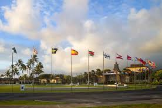

Brigham Young University–Hawaii (Brigham Young University–Hawaii) is a unique university located in the small town of Laie on the northern coast of the island of Oahu. Known for its diverse student body, the university welcomes students from many different countries and cultures, creating a learning environment that encourages global understanding and friendship. Students at BYU–Hawaii have access to a variety of academic programs, recreational activities, and service opportunities while enjoying the natural beauty of Hawaii’s beaches, mountains, and tropical climate. The university emphasizes both academic excellence and personal growth, helping students develop leadership skills, strengthen their character, and prepare for successful careers and meaningful lives of service.
As a student here in BYUH, I would recommend it for those looking to apply. This is a great school full of diversity. Everyone is welcomed and will feel at home.
If you want to learn more, click the links above.